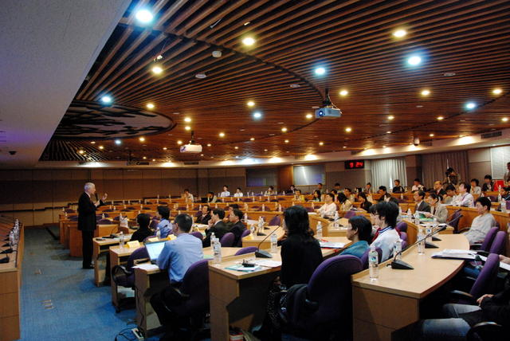

Created at Wednesday, 17 October 2007 18:40 Last Updated on Thursday, 06 January 2011 23:54
Written by webmaster
. The ICESA 2007 conference ends and was a success event.
-  Date: Dec. 12-13, 2007
- Venue: Activity Center, Academia Sinica, Taipei, Taiwan 128, Section 2, Academia Road, Institute of Information Science, Nankang, Taipei, Taiwan, R.O.C.
- Website: https://icesa.openfoundry.org/
- Download: PDF / Video
The Open Source Software Foundry (OSSF) cordially invites individuals and groups to participate in the ICESA 2007 (International Conference on Enterprise Systems and Applications 2007) on Dec. 12-13, 2007. The conference program provides a forum for the presentation of topics covering the enterprise computing theory & practicality. The conference also invites Dr. Chung L. Liu, Honorary Chair Professor, National Tsing Hua University and Dr. Yen-nun Huang, Executive Vice President, Institute for Information Industry to deliver the keynotes respectively from the perspective of academia and the business sector to elaborate the trend of enterprise systems and applications. In addition, OSSF will arrange two tutorials from IBM & Potix Co. to share their experiences on technical transferring. In the sessions of panel discussions, the conference plans to have the experts who come from Korea, Hong Kong, Singapore and other countries to exchange ideas for localizing experience and new developments of software in Asia.
Welcome to participate with limited seats available. Take advantage of the conferences’early bird price by 30th Nov. 2007, and get a discount on the registration fee.